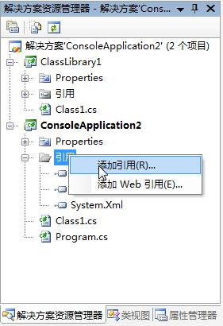
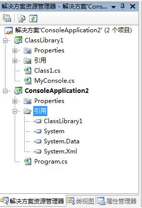
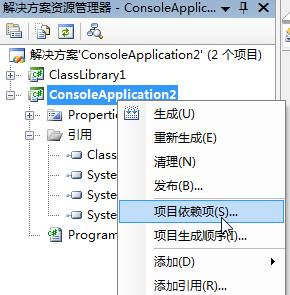
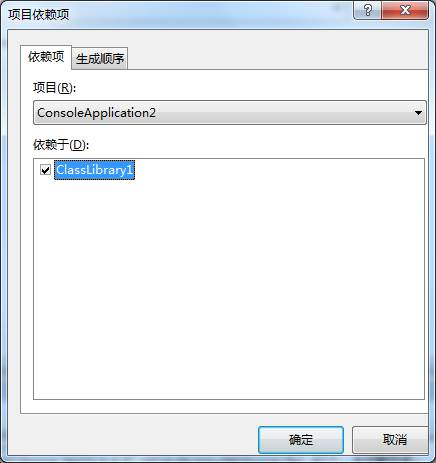
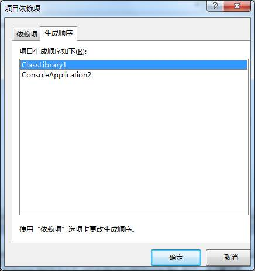

ITEEDU
实例：两个项目的欢迎程序
步骤
首先创建一个控制台应用程序ConsoleApplication1。
再加入一个库项目ClassLibrary1。
在ConsoleApplication1项目中的引用中添加ClassLibrary1。


在库项目中添加类MyConsole.cs。

设置项目依赖关系。项目依赖关系是批一个项目中引用了另一个项目中的类或其它组件，使两者之间产生的关系。如本例中ConsoleApplication1项目要引用ClassLibrary1库项目中的MyConsole类，其之间就会产生依赖关系。


设置项目生成顺序。项目生成顺序指在解决方案生成可执行文件时先生成哪个项目，后生成哪个项目。一般先生成被依赖项目，再生成依赖项目。如ClassLibrary1库项目被ConsoleApplication1项目依赖，所以先生成ClassLibrary1库项目。因为在生成ConsoleApplication1项目时，要用到生成的库中的MyConsole类。

代码如下：
Program.cs
using System;
using System.Collections.Generic;
using System.Text;
using ClassLibrary1;
namespace ConsoleApplication1
{
class Program
{
static void Main(string[] args)
{
string name = MyConsole.ReadString("输入你的姓名：");
MyConsole.WriteString(name + "欢迎来到C#的世界");
Console.ReadLine();
}
}
}
MyConsole.cs
using System;
using System.Collections.Generic;
using System.Text;
namespace ClassLibrary1
{
public class MyConsole
{
public static string ReadString(string msg)
{
Console.Write(msg);
return System.Console.ReadLine();
}
public static void WriteString(string msg)
{
System.Console.WriteLine(msg);
}
}
}